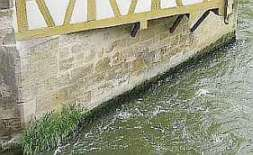
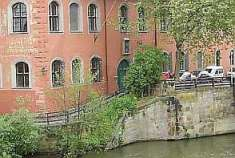
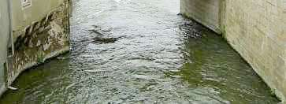
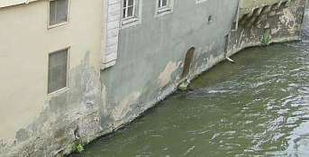

Weitere Datenübertragung Ihres Webseitenbesuchs an Google durch ein Opt-Out-Cookie stoppen - Klick!
Stop transferring your visit data to Google by a Opt-Out-Cookie - click!: Stop Google Analytics
Cookie Info. Datenschutzerklärung


 Altbau und Denkmalpflege Informationen - Startseite / Impressum
Altbau und Denkmalpflege Informationen - Startseite / Impressum
Inhaltsverzeichnis - Sitemap - über 1.500 Druckseiten unabhängige Bauinformationen
Fragen??? +++ Alles & noch viel mehr auf DVD +++ Gegengutachten - auch zur "aufsteigenden Feuchte" +++ Baustoffseite
Kostengünstiges Instandsetzen von Burgen, Schlössern, Herrenhäusern, Villen - Ratgeber zu Kauf, Finanzierung, Planung (PDF eBook)
Altbauten kostengünstig sanieren:
Heiße Tipps gegen Sanierpfusch (PDF eBook + Druckversion ===>)
Baubücher - kurz und frech rezensiert +++
Die härtesten Bücher gegen den Klimaschwindel - Kurz + deftig rezensiert
Nitrate (Salpeter), Sulfate & Chloride & andere löslichen Salze in der Wand - Know-How & Wie beseitigen?
Fauler Zauber: Sanierputz +++
Wirksam gegen feuchte Wände - Die Hüllflächentemperierung
The Fraud of the Rising Damp - the Hoax with Salt, Moisture and Dampness in buildings

: Aufsteigende Feuchte + Mauerwerkstrockenlegung 5
Aufsteigende Feuchte Kapitel 1 - Einführung zur Problemlage
2 - Ein schrecklicher "Trockenlegungsfall"
3 - Feuchtequellen
4 - Ziegel-Mauerwerk und Aufsteigende Feuchte
5 - Naturstein-Mauerwerk und Aufsteigende Feuchte
6 - Nachträgliche Horizontalabdichtung historischen Mauerwerks? - Mauerwerksversalzung
7 - Kondensat und Regen
8 - Trockenlegung oder Bauwerksschäden durch Horizontalisolierung?
9 - Trockenlegungsschwindel - die Marketingtricks
10 - Elektroosmose und die typischen Trockenleger-Ausreden bei Mißerfolg
11 - Trockenlegungsexperten? - Planer und Gutachter
12 - Trockenlegung - Industrieberatung oder der gesunde Menschenverstand? Probleme und Lösungen
13 - Mauertrockenlegung - Die klassischen Fehler
14 - Nasse Wände sanieren - Was sagt die Wissenschaft?
15 - Mauerfeuchte woher? Zum historischen und wissenschaftlichen Hintergrund
(aktualisiert 4.08.09)
Naturstein-Mauerwerk und Aufsteigende Feuchte
Sie glauben? Ganz sicher? Auch an schwarze Katz, Hexenzauber, Engelei, Wahrsagerinnen und Astroshows? Von mir aus,
wenn's grad Spaß macht. Morgen dann wieder heilende Steine, magische Orte, Granderwasser, sechs Millionen,
sechseinhalb Tibeter, wundersame Bäume, Duftöle, Schüsslersalze, Bachblüten, Chemo, Kanzlerin Merkel,
Gotteskrieger Georg Busch oder Ökoschmerzbengel Gabriel. Egal. Aber eine Aufklärung muß ich Ihnen leider gönnen:
Die unglaublichen Utopien der angeblich "aufsteigenden Feuchte" - daran glauben Sie gewiß mit aller Inbrunst, das weiß ich sicher!
- finden nirgends in der Wirklichkeit Bestätigung. Schauen Sie sich doch mal in
Ihrer eigenen Umgebung um, prüfen Sie Ufermauern, Brückenpfeiler und alle im Wasser stehenden Gebäude, meinetwegen
auch in Ihrer Kläranlage, ob irgendwo an der Wasserkante / Waterkant eine Feuchte über die Wasser-Pegelhöhe
aufsteigt. Augen aufgesperrt!
Auch das in der Regnitz stehende Bamberger Alte Rathaus und seine Brückenwiderlager und Ufermauern durften dank
meisterlicher Handwerkskunst ebenso auf "Horizontalisolierung" verzichten, ohne daß der Bambärche
Börchermastä nassa Füß griechd hädd:


Selbst wenn wir genauer hinstieren, naß ists nur, wu der Regnitz ihre Wölln hieblätschern. Und des is gäwisslich wohr,
beim Bärtla des Brofeetn!

.
Sogar gegenüber gilt das. Bitte beachten Sie - gugg schö hie! - die Silikatanstrichschäden
an der Wetterseite des bischöflichen Stadtpalastes. Es ist keine aufsteigende
Feuchte, sondern (hier zur Aufklärung ein kleines Klickerli/Drückerli ...)

.
Flußabwärts dann linksregnitzsch ein katholisches Wunder: Rechts am Rathaussockel keine aufsteigende Feuchte
- aber gegenüber vielleicht doch? Oder Evangelen? Aber nein. Hier hausten einst die Henna, Gaaßn und Moggerla
der bamberche Oggerbürchä. Da muß freilich mindestends a Zämentschberrbutz, naa, nuch bässä
a förchterlich deuers Saniärbützla noo, un a nuch deurera "wasserabweisende" Farb ohm drauf. Wu
käme denn sunst hie? Miä homms ja.
A Dippla, frei nach dem alten Kaliningrader Immanueloff Kantorowitsch: Habe den Mut, Dich Deiner eigenen Glotzer
/ Aaang zu bedienen! Schauen Sie sich doch selbst mal um! Ei da guck! Jedes Brücken- und Ufermauerwerk beweist
Ihnen, daß es nirgends aufsteigende Feuchte gibt. Auch wenn die Fachpresse dagegen gerichtetes Bemühen
so bejubelt:
"1998 begannen die Handwerker mit der Restaurierung der Außenwände des Kirchenschiffs ... Um den Wassertransport
über die Fundamente ins Natursteinmauerwerk dauerhaft zu unterbinden, wurde eine Horizontalsperre aus
Hydrophobierungsmitteln und Schaummörtel eingebaut." (Quelle: "Gotische Bücherstube. Umnutzung der
Jakobikirche ... zur Bibliothek", in: Bauhandwerk 11/08, S. 29 ff.)
Warum es in Mauerwerken überhaupt keine aufsteigende Feuchte geben kann? Lesen Sie weiter zum wissenschaftlichen
Hintergrund (weil Sie mir ja sowieso nix glaam sunnern lieber imma weider denna kravadierdn Herrn Schmolschbur-Doktern
und Instuduuds-Brofässern, die wu su schö schreimkönna und aach denna so arch dreuherzichn
Handwerchsmastern (hommä immä scho so gmachd!) oddä gleich denna verblöffenden
Zauberkünschtlern nochlaafen wie weiland die Haamelner Raddn dem Pfeifnbläser - blues wäiche derä
bissla Feuchtn und dem klan Gebröisel, eijeijei, Pfeifndäggela verrägg! Sie homs öbbä dick!):
Weiter? ===> Aufsteigende Feuchte Kapitel 6
Sind Sie Opfer von Trockenlegungsfirmen - hat Ihr Gutachter Aufsteigende Feuchte diagnostiziert? Rätseln Sie,
welches der teuren Trockenlegungs- / Entfeuchtungs- / Sanierungs-Angebote das richtige ist?
Dieser Aufklärungs-Knüller hilft bestimmt etwas weiter:
Wissenschaftsbetrug der Bauchemie und Geräteindustrie, Geschäftemacherei der Planerluschen, Schlechtachter,
Schwachverständigen sowie der Nepper, Schlepper, Bauernfänger und Handwerkspfuscher mit "Aufsteigender
Feuchte (engl.: Rising Damp)", Ursachen und Sanierung feuchter Wände:
Jeff Howell: The Rising Damp Myth
(Rezension in Deutsch)
Sonstige Nützlichkeiten und andere Meinungen für feuchte, nasse, abgesoffene, verschimmelte,
verpilzte und vermorschte Häuser - soweit es nicht um nutzlose Horizontalisolierung gegen
"aufsteigende Feuchte" geht, der manche industrieabhängige bzw. ahnungslose Autoren (wer es ist, verrate ich nicht,
ätsch!) - anhängen. Reihenfolge der Titel beinhaltet keinerlei Wertung!!!:
Altbau und Denkmalpflege Informationen Startseite